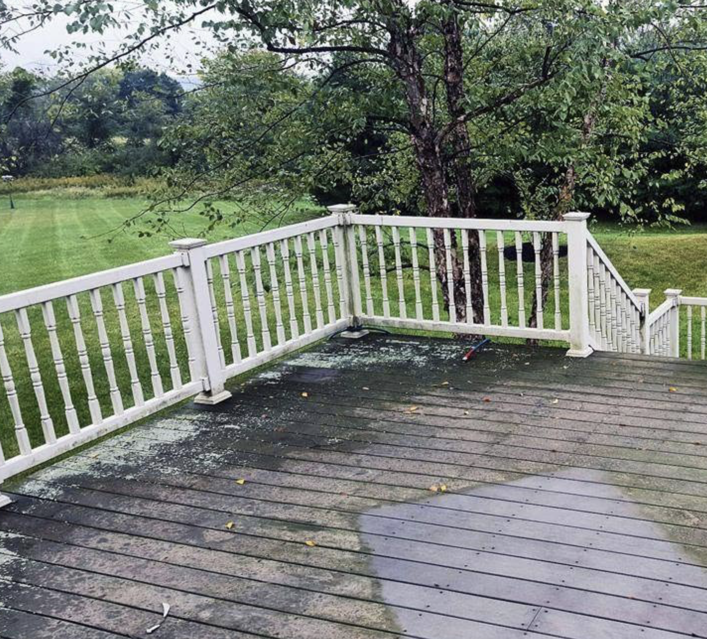
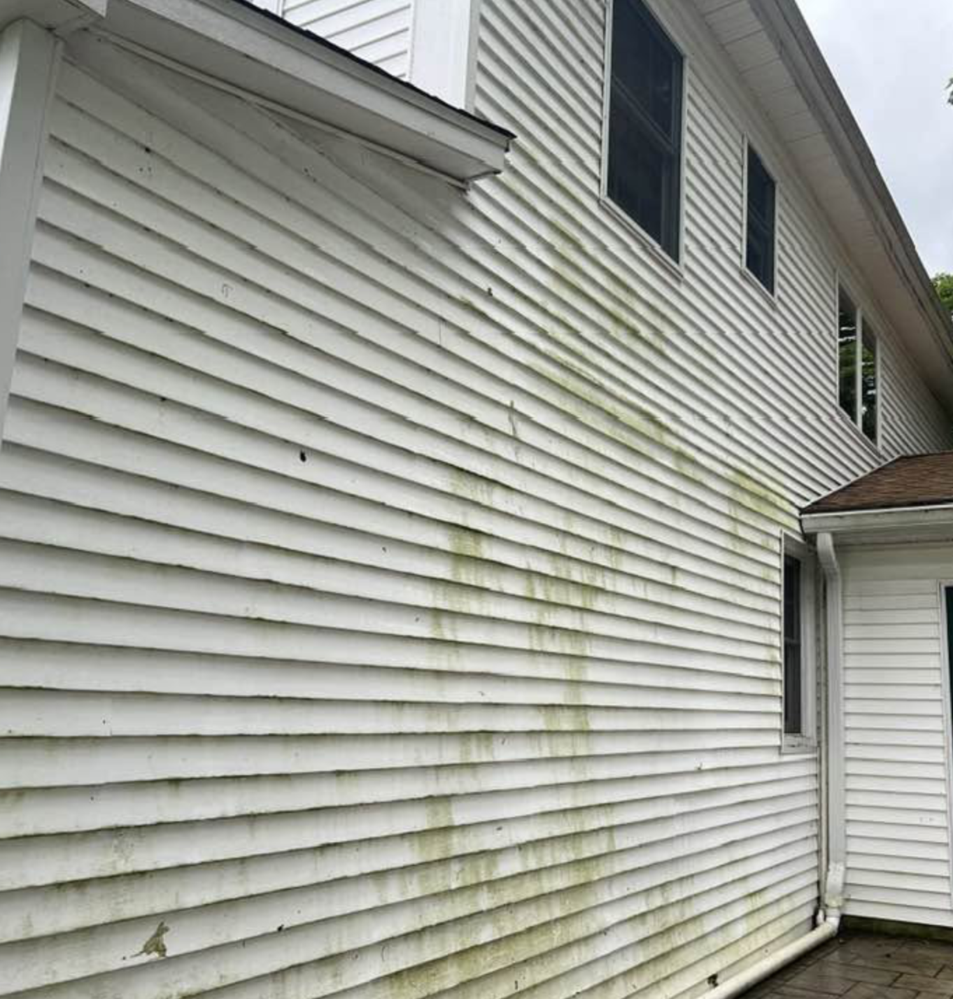
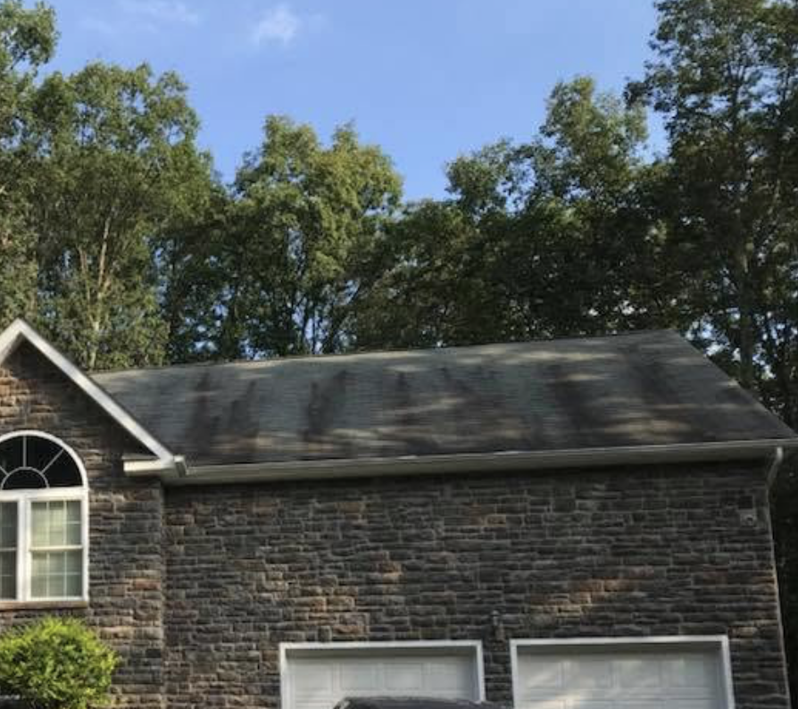
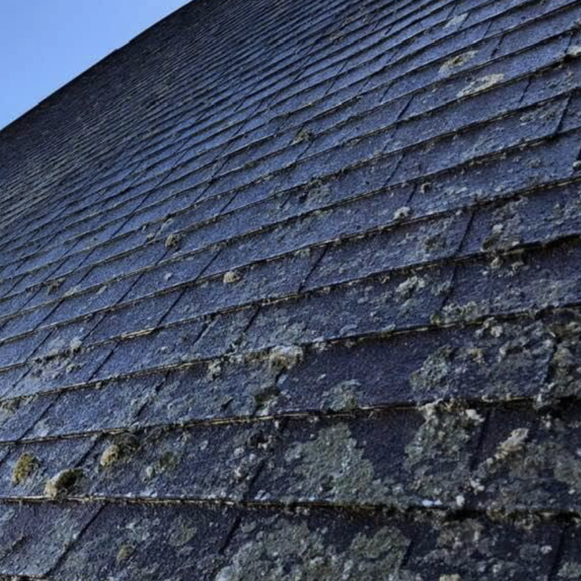
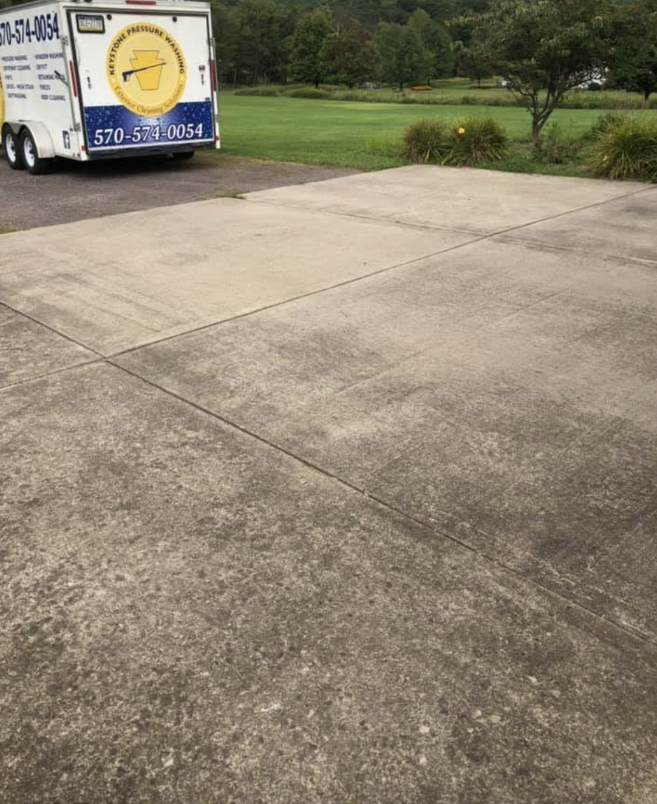
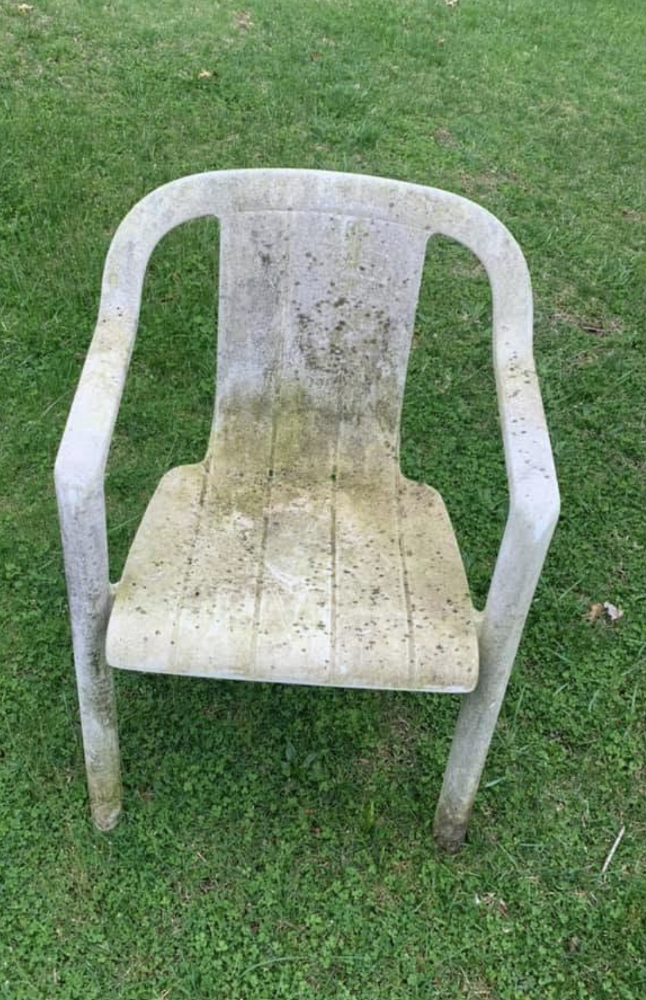

Stains and buildup can leave your siding looking dull and discolored, but professional cleaning can restore a cleaner, brighter appearance.

Unsightly black streaks can take away from your home’s appearance, but proper cleaning can leave the surface looking fresh and renewed.

Dirt, grime, and buildup can leave your patio looking worn and uninviting, but professional cleaning can restore a cleaner, brighter space that’s ready to enjoy.

Stains and buildup can leave your siding looking dull and discolored, but professional cleaning can restore a cleaner, brighter appearance.

Unsightly black streaks can take away from your home’s appearance, but proper cleaning can leave the surface looking fresh and renewed.

Mold and mildew can quickly make outdoor surfaces look dirty and neglected, but professional cleaning can remove the buildup and bring back a clean, refreshed look.

Dirt, grime, and stains can build up over time, but a thorough cleaning can transform your driveway and brighten your home’s curb appeal.

Outdoor furniture can collect dirt, grime, and buildup from the elements, but professional cleaning can leave it looking refreshed and ready to enjoy.